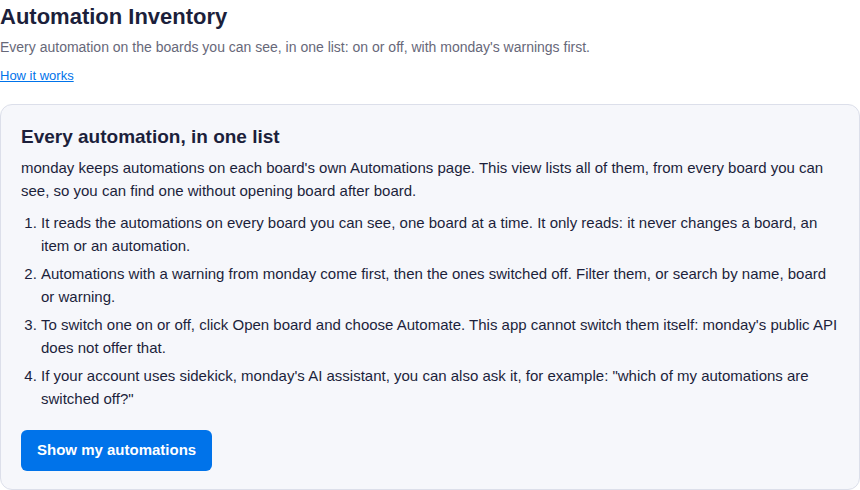
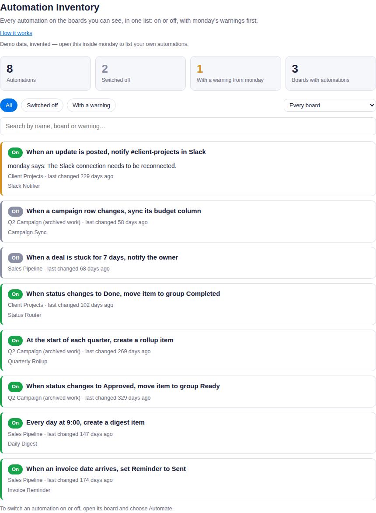
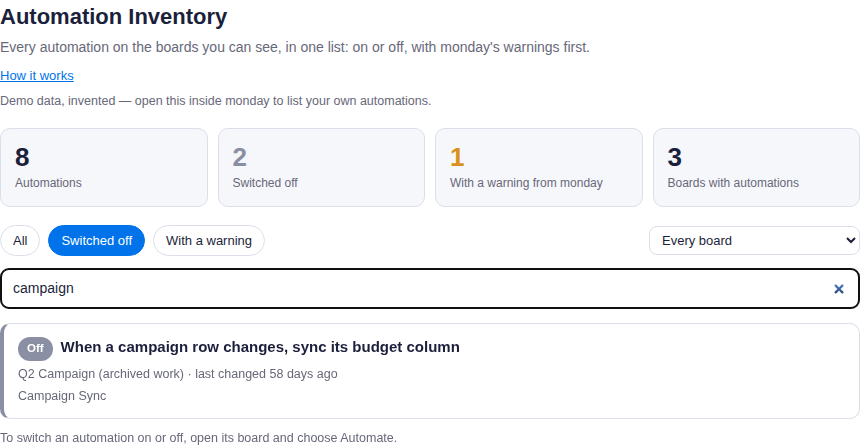

How to use Automation Inventory
monday keeps automations on each board's own Automations page. Automation Inventory lists every automation on every board you can see in one place, with whether it is on or off and any warning monday shows on it.
Before you start
- You need to be an admin or a member of the monday account. Viewers cannot use the app, because monday does not let viewer accounts use its API.
- It lists the automations on the boards you can see. Someone with access to more boards sees more.
- The app only reads. It never changes a board, an item or an automation.
Install and first use
- Install Automation Inventory from the monday marketplace.
- Open it from your workspace: click + (Add item to workspace) at the top of the left-side menu, choose Apps, and pick Automation Inventory. You can also add it as a view on any board; it lists every board either way.
- The first time it opens, a short welcome page explains what it shows. Click Show my automations.
- The app reads the automations board by board and shows its progress. A large account can take a minute.

The welcome page, shown the first time.
Reading the list
At the top: how many automations there are, how many are switched off, how many have a warning from monday, and on how many boards.
| Label | Meaning |
|---|---|
| On | Switched on in monday. |
| Off | Switched off in monday. |
| Unknown | monday did not say whether it is on. |
A row with an amber edge has a warning from monday, shown as "monday says: …". Those come first, then the automations that are switched off.

The list, on an invented demo account.
Finding an automation
- Filters: All, Switched off, With a warning, and a board.
- Search: type any words; an automation must match all of them, in its name, its board, its description or its warning. Capital letters and accents do not matter.
- Open board, under each automation, opens its board in a new tab. Choose Automate there to switch it on or off, edit it or delete it. This app cannot do that itself: monday's public API does not offer it.

The Switched off filter with the search "campaign".
Asking sidekick
If your account uses sidekick, monday's AI assistant, it can search the list for you. For example: "which of my automations are switched off?", "which automations post to Slack?", or "list the automations on the Sales Pipeline board". It answers with each automation's name, board and state.
Your data
The app asks monday for read-only access to boards. The list is read in your browser, straight from monday, each time you open the app, and is not stored anywhere. When sidekick asks, the app reads the same list with a token monday issues for that one request, answers, and keeps nothing. The full privacy policy is linked on the app's marketplace listing.
Support
Write to support@atesensoftware.com.